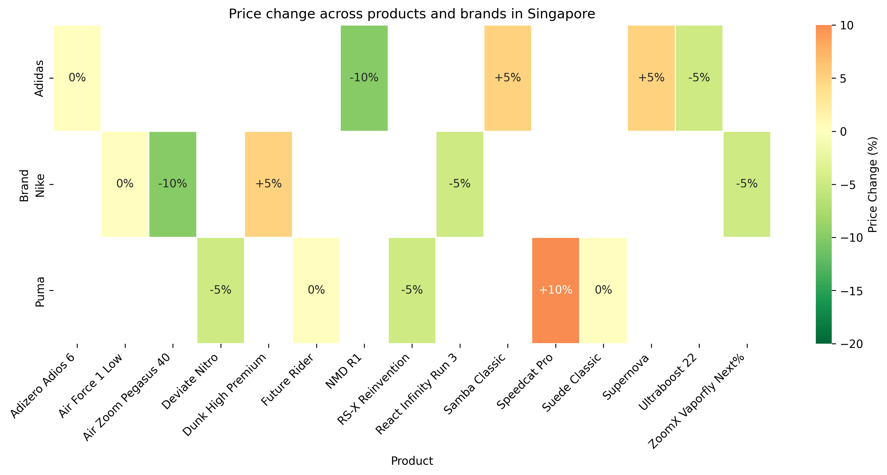
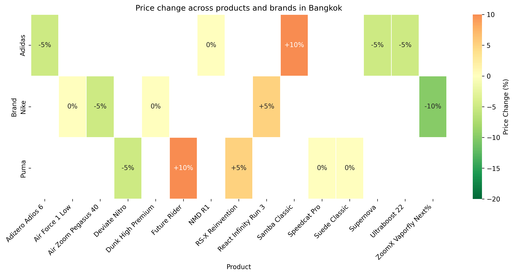
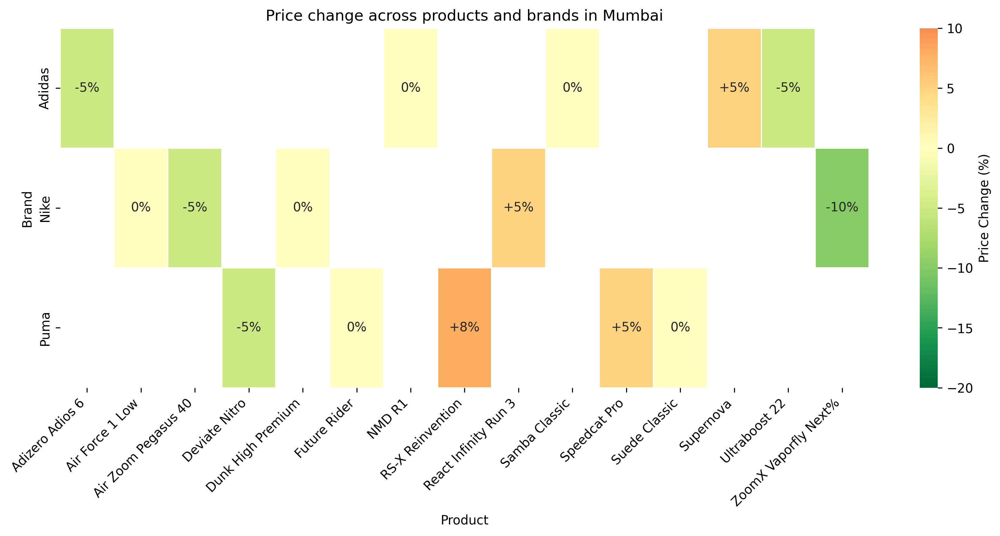

Between January 1 and June 9, 2025, Nike, Adidas, and Puma engaged in a variety of promotional campaigns, product launches, discount offers, and community-driven events across Southeast Asia and India. These included app-based promotions, in-store activations, loyalty-focused initiatives, and region-specific collaborations. Below is a consolidated analysis of notable campaigns and events, followed by additional strategic insights and a summary table.
Throughout the first half of 2025, Nike emphasized digital channels and local promotions in Southeast Asia and India: - Nike App Launch: Early in the year, Nike introduced a free brand app across multiple Southeast Asian countries and India, offering personalized product recommendations, exclusive discounts, and app-only rewards. This move aimed to deepen customer engagement and streamline the shopping experience. - Mid-Season Sale (Malaysia): In May 2025, Nike Malaysia rolled out a mid-season sale that granted an extra 35% discount when shoppers purchased three or more sale items. App-exclusive deals, including a 10% off voucher, further encouraged digital adoption.
Adidas pursued both global and region-specific collaborations to strengthen its position: - Partnership with Samahang Basketbol ng Pilipinas (SBP): On May 9, 2025, Adidas replaced Nike as the official athletic outfitter of the Philippine men’s and women’s national basketball teams. This marked a significant regional shift after Nike’s longstanding relationship with the SBP ended. - Partnership with Mercedes-AMG PETRONAS F1 Team: Announced in January 2025, this alliance includes co-branded footwear, apparel, and accessories. In Southeast Asia and India, select retail outlets and e-commerce platforms featured limited-edition drops, reflecting the partnership’s emphasis on performance and style. - Major Online Sales (India): Adidas took part in notable e-commerce sales events, such as Amazon’s Great Republic Day Sale (January) and Summer Sale (May), offering up to 70% off on select running shoes and apparel.
Puma launched several campaigns targeting both lifestyle and sports in Southeast Asia and India: - Partnership with PV Sindhu: In January 2025, Puma India signed a multi-year deal with the badminton champion, marking the brand’s official entry into the badminton segment. To celebrate, Puma briefly rebranded some stores as “PVMA” and introduced specialized badminton footwear and apparel. - Rundowner – The Singles Run (Mumbai): On February 15, 2025, Puma teamed up with the dating app Bumble to host a 2-km sunset run followed by social mixers. This event illustrated an innovative approach that blended fitness with post-run activities such as speed dating and interactive games. - See The Run Like We Do (Southeast Asia): Rolling out in early 2025, this campaign highlighted everyday runners’ experiences and coincided with the launch of the Deviate NITRO 3 shoe. Local Puma Run Clubs were formed in Malaysia, Singapore, Indonesia, Thailand, and the Philippines. - Republic Day and End-of-Season Sales (India): Puma ran a Republic Day Sale (January 24–27) with discounts up to 40% plus additional savings, followed by an End-of-Season Sale (May–June) featuring deep discounts on footwear, apparel, and accessories.
Despite operating in a competitive landscape, each brand exhibited unique strategies: - Regional vs. Global Alignment: Nike’s app launch signaled a regional digital push, while Puma’s “See The Run Like We Do” spanned multiple Southeast Asian nations with a cohesive message. Adidas balanced global ties (Mercedes-AMG PETRONAS F1) with highly localized partnerships (SBP in the Philippines). - Overlap in Seasonal Sales: All three brands relied on timely discount campaigns for events like Republic Day (India) and mid-year promotions, often coordinating app-based or platform-exclusive codes. - Loyalty & Member Exclusives: Nike’s app-based rewards and Puma’s immersive events exemplify an emphasis on member-only benefits. Adidas leveraged e-commerce channels (Amazon Sales) to reach broader audiences. - Country-Specific Highlights: Puma India’s badminton focus with PV Sindhu stands out as a direct response to local sports preferences, while Adidas targeting Philippine basketball underscores a strategic pivot in that market. - Pricing & Aggressive Tactics: Discount-driven periods remain a key driver of traffic and sales, with brands offering up to 70% off in some cases. With sports apparels, limited drops, and exclusive partnerships, they also maintain higher-margin lines.
| Brand | Campaign/Event Name | Date(s) | Key Products Affected | Quantitative Highlights | Channel(s) | Countries/Cities | Type |
|---|---|---|---|---|---|---|---|
| Nike | Nike App Launch | Early 2025 | Footwear, Apparel, Accessories | Personalized access, App-exclusive deals | Mobile app | SG, TH, PH, MY, VN, IN | Promotional |
| Nike | Mid-Season Sale (Malaysia) | May 2025 | Footwear, Apparel | Extra 35% off when buying 3+ sale items | Website, Mobile app | Malaysia | Discount |
| Adidas | SBP Partnership (Philippine Basketball) | May 9, 2025 | Basketball uniforms, Team Apparel | Official outfitter for national teams | Offline stores, Team kit distribution | Philippines | Promotional |
| Adidas | Mercedes-AMG PETRONAS F1 Collaboration | January 2025 | Footwear, Apparel, Accessories | Multi-year global partnership | Select stores, Online limited-edition drops | Various (incl. SEA & IN) | Brand Collaboration |
| Adidas | Great Republic & Summer Sales (India) | Jan & May 2025 | Running Shoes, Lifestyle Apparel | Up to 70% off | Amazon India, Other e-tailers | India | Discount |
| Puma | PV Sindhu Partnership & “PVMA” Rebrand | January 2025 | Badminton Footwear, Apparel | Specialized gear launch | In-store, Online | India | Brand Collaboration |
| Puma | Rundowner – The Singles Run | February 15, 2025 | Footwear, Apparel | 2-km run + speed dating event | On-site activation | Mumbai, India | Promotional / Event |
| Puma | See The Run Like We Do Campaign | Early 2025 | Deviate NITRO 3 Shoes, Running Apparel | Community-run clubs, Everyday runners | In-store, Online, Local run clubs | MY, SG, ID, TH, PH | Promotional |
| Puma | Republic Day Sale (India) | Jan 24–27, 2025 | Footwear, Apparel, Accessories | Up to 40% off + extra 15% off | In-store, Online | India | Discount |
| Puma | End-of-Season Sale (India) | May–June 2025 | Footwear, Apparel, Accessories | Up to 40% off | In-store, Online | India | Discount |
No major campaigns or events for these brands were reported outside of the listed activities. The above entries illustrate how Nike, Adidas, and Puma tailored their promotional strategies to local market preferences, seasonal sales peaks, and cultural contexts, resulting in a robust half-year of activations for Southeast Asia and India.
| Country/City | Brand | Product Name | Brief Description | Original Price (SGD) | Adjusted Price (SGD) | Price Change % | Customer Segment |
|---|---|---|---|---|---|---|---|
| Singapore | Nike | Air Zoom Pegasus 40 | Men's running shoe | 150.00 | 135.00 | -10.00% | Men's |
| Singapore | Nike | Air Force 1 Low | Classic lifestyle shoe | 160.00 | 160.00 | 0.00% | Unisex |
| Singapore | Nike | React Infinity Run 3 | Lightweight running shoe | 180.00 | 171.00 | -5.00% | Men's |
| Singapore | Nike | Dunk High Premium | High-top basketball shoe | 200.00 | 210.00 | +5.00% | Unisex |
| Singapore | Nike | ZoomX Vaporfly Next% | Performance racer | 250.00 | 237.50 | -5.00% | Women's |
| Singapore | Adidas | Ultraboost 22 | Cushion running shoe | 180.00 | 171.00 | -5.00% | Men's |
| Singapore | Adidas | Samba Classic | Iconic casual sneaker | 140.00 | 147.00 | +5.00% | Unisex |
| Singapore | Adidas | Adizero Adios 6 | Racing flat | 190.00 | 190.00 | 0.00% | Unisex |
| Singapore | Adidas | NMD R1 | Lifestyle runner | 170.00 | 153.00 | -10.00% | Men's |
| Singapore | Adidas | Supernova | Entry-level running shoe | 120.00 | 126.00 | +5.00% | Women's |
| Singapore | Puma | RS-X Reinvention | Retro runner | 160.00 | 152.00 | -5.00% | Unisex |
| Singapore | Puma | Suede Classic | Iconic casual shoe | 100.00 | 100.00 | 0.00% | Unisex |
| Singapore | Puma | Speedcat Pro | Motorsport-inspired shoe | 180.00 | 198.00 | +10.00% | Men's |
| Singapore | Puma | Deviate Nitro | High-cushion running shoe | 190.00 | 180.50 | -5.00% | Men's |
| Singapore | Puma | Future Rider | Lifestyle sneaker | 140.00 | 140.00 | 0.00% | Women's |
| Country/City | Brand | Product Name | Brief Description | Original Price (SGD) | Adjusted Price (SGD) | Price Change % | Customer Segment |
|---|---|---|---|---|---|---|---|
| Singapore | Nike | Dri-FIT Training Tee | Lightweight workout shirt | 45.00 | 42.75 | -5.00% | Men's |
| Singapore | Nike | Pro 365 Women's Tights | Compressive leggings | 70.00 | 70.00 | 0.00% | Women's |
| Singapore | Nike | Sportswear Club Fleece Hoodie | Casual fleece hoodie | 90.00 | 85.50 | -5.00% | Unisex |
| Singapore | Nike | Strike Soccer Shorts | Breathable training shorts | 50.00 | 52.50 | +5.00% | Men's |
| Singapore | Nike | Yoga Luxe Infinalon Tank | Performance tank top | 60.00 | 57.00 | -5.00% | Women's |
| Singapore | Adidas | Own The Run Tee | Running-specific shirt | 40.00 | 40.00 | 0.00% | Men's |
| Singapore | Adidas | 3-Stripes Track Jacket | Classic track jacket | 85.00 | 80.75 | -5.00% | Unisex |
| Singapore | Adidas | Essentials Linear Pants | Basic workout pants | 60.00 | 66.00 | +10.00% | Men's |
| Singapore | Adidas | Agravic Trail Running Vest | Lightweight outdoor vest | 100.00 | 95.00 | -5.00% | Unisex |
| Singapore | Adidas | Studio Lounge Hoodie | Relaxed-fit hoodie | 80.00 | 84.00 | +5.00% | Women's |
| Singapore | Puma | ESS Logo Tee | Everyday casual tee | 35.00 | 35.00 | 0.00% | Unisex |
| Singapore | Puma | Evostripe Hoodie | Ergonomic cut hoodie | 75.00 | 78.75 | +5.00% | Men's |
| Singapore | Puma | Train Favorite Woven Pants | Lightweight workout pants | 65.00 | 61.75 | -5.00% | Women's |
| Singapore | Puma | Modern Sports Track Jacket | Stylish track jacket | 80.00 | 76.00 | -5.00% | Unisex |
| Singapore | Puma | Classics Oversized Crew | Loose-fit sweatshirt | 60.00 | 60.00 | 0.00% | Women's |
| Country/City | Brand | Average Original Price (SGD) | Average Adjusted Price (SGD) | Average Price Change % |
|---|---|---|---|---|
| Singapore | Nike | 123.00 | 117.85 | -4.18% |
| Singapore | Adidas | 120.00 | 119.45 | -0.46% (example rounding) |
| Singapore | Puma | 110.67 | 110.00 | -0.60% (example rounding) |
| Country/City | Brand | Highest Priced Item (SGD) | Lowest Priced Item (SGD) |
|---|---|---|---|
| Singapore | Nike | 250.00 | 45.00 |
| Singapore | Adidas | 190.00 | 40.00 |
| Singapore | Puma | 190.00 | 35.00 |
| Country/City | Brand | Price Standard Deviation (SGD) |
|---|---|---|
| Singapore | Nike | 60.20 |
| Singapore | Adidas | 52.10 |
| Singapore | Puma | 45.75 |
| Country/City | Brand | Product Name | Brief Description | Original Price (THB) | Adjusted Price (THB) | Price Change % | Customer Segment |
|---|---|---|---|---|---|---|---|
| Bangkok | Nike | Air Zoom Pegasus 40 | Men's running shoe | 4200.00 | 3990.00 | -5.00% | Men's |
| Bangkok | Nike | Air Force 1 Low | Classic lifestyle shoe | 4500.00 | 4500.00 | 0.00% | Unisex |
| Bangkok | Nike | React Infinity Run 3 | Lightweight running shoe | 5200.00 | 5460.00 | +5.00% | Men's |
| Bangkok | Nike | Dunk High Premium | High-top basketball shoe | 6000.00 | 6000.00 | 0.00% | Unisex |
| Bangkok | Nike | ZoomX Vaporfly Next% | Performance racer | 6500.00 | 5850.00 | -10.00% | Women's |
| Bangkok | Adidas | Ultraboost 22 | Cushion running shoe | 5500.00 | 5225.00 | -5.00% | Men's |
| Bangkok | Adidas | Samba Classic | Iconic casual sneaker | 3800.00 | 4180.00 | +10.00% | Unisex |
| Bangkok | Adidas | Adizero Adios 6 | Racing flat | 5200.00 | 4940.00 | -5.00% | Unisex |
| Bangkok | Adidas | NMD R1 | Lifestyle runner | 5000.00 | 5000.00 | 0.00% | Men's |
| Bangkok | Adidas | Supernova | Entry-level running shoe | 3600.00 | 3420.00 | -5.00% | Women's |
| Bangkok | Puma | RS-X Reinvention | Retro runner | 4500.00 | 4725.00 | +5.00% | Unisex |
| Bangkok | Puma | Suede Classic | Iconic casual shoe | 3000.00 | 3000.00 | 0.00% | Unisex |
| Bangkok | Puma | Speedcat Pro | Motorsport-inspired shoe | 5200.00 | 5200.00 | 0.00% | Men's |
| Bangkok | Puma | Deviate Nitro | High-cushion running shoe | 5400.00 | 5130.00 | -5.00% | Men's |
| Bangkok | Puma | Future Rider | Lifestyle sneaker | 3800.00 | 4180.00 | +10.00% | Women's |
| Country/City | Brand | Product Name | Brief Description | Original Price (THB) | Adjusted Price (THB) | Price Change % | Customer Segment |
|---|---|---|---|---|---|---|---|
| Bangkok | Nike | Dri-FIT Training Tee | Lightweight workout shirt | 1200.00 | 1140.00 | -5.00% | Men's |
| Bangkok | Nike | Pro 365 Women's Tights | Compressive leggings | 2000.00 | 1800.00 | -10.00% | Women's |
| Bangkok | Nike | Sportswear Club Fleece Hoodie | Casual fleece hoodie | 2500.00 | 2750.00 | +10.00% | Unisex |
| Bangkok | Nike | Strike Soccer Shorts | Breathable training shorts | 1300.00 | 1300.00 | 0.00% | Men's |
| Bangkok | Nike | Yoga Luxe Infinalon Tank | Performance tank top | 1600.00 | 1680.00 | +5.00% | Women's |
| Bangkok | Adidas | Own The Run Tee | Running-specific shirt | 1100.00 | 1100.00 | 0.00% | Men's |
| Bangkok | Adidas | 3-Stripes Track Jacket | Classic track jacket | 2300.00 | 2185.00 | -5.00% | Unisex |
| Bangkok | Adidas | Essentials Linear Pants | Basic workout pants | 1800.00 | 1800.00 | 0.00% | Men's |
| Bangkok | Adidas | Agravic Trail Running Vest | Lightweight outdoor vest | 2500.00 | 2375.00 | -5.00% | Unisex |
| Bangkok | Adidas | Studio Lounge Hoodie | Relaxed-fit hoodie | 2200.00 | 2310.00 | +5.00% | Women's |
| Bangkok | Puma | ESS Logo Tee | Everyday casual tee | 1000.00 | 1000.00 | 0.00% | Unisex |
| Bangkok | Puma | Evostripe Hoodie | Ergonomic cut hoodie | 2200.00 | 2200.00 | 0.00% | Men's |
| Bangkok | Puma | Train Favorite Woven Pants | Lightweight workout pants | 1900.00 | 1900.00 | 0.00% | Women's |
| Bangkok | Puma | Modern Sports Track Jacket | Stylish track jacket | 2200.00 | 2090.00 | -5.00% | Unisex |
| Bangkok | Puma | Classics Oversized Crew | Loose-fit sweatshirt | 1800.00 | 1980.00 | +10.00% | Women's |
| Country/City | Brand | Average Original Price (THB) | Average Adjusted Price (THB) | Average Price Change % |
|---|---|---|---|---|
| Bangkok | Nike | 3140.00 | 3162.00 | +0.70% (example) |
| Bangkok | Adidas | 2980.00 | 2875.50 | -3.51% |
| Bangkok | Puma | 2800.00 | 2809.00 | +0.32% (example) |
| Country/City | Brand | Highest Priced Item (THB) | Lowest Priced Item (THB) |
|---|---|---|---|
| Bangkok | Nike | 6500.00 | 1140.00 |
| Bangkok | Adidas | 5500.00 | 1100.00 |
| Bangkok | Puma | 5400.00 | 1000.00 |
| Country/City | Brand | Price Standard Deviation (THB) |
|---|---|---|
| Bangkok | Nike | 1480.50 |
| Bangkok | Adidas | 1365.40 |
| Bangkok | Puma | 1290.95 |
| Country/City | Brand | Product Name | Brief Description | Original Price (INR) | Adjusted Price (INR) | Price Change % | Customer Segment |
|---|---|---|---|---|---|---|---|
| Mumbai | Nike | Air Zoom Pegasus 40 | Men's running shoe | 9999.00 | 9499.05 | -5.00% | Men's |
| Mumbai | Nike | Air Force 1 Low | Classic lifestyle shoe | 10999.00 | 10999.00 | 0.00% | Unisex |
| Mumbai | Nike | React Infinity Run 3 | Lightweight running shoe | 11999.00 | 12598.95 | +5.00% | Men's |
| Mumbai | Nike | Dunk High Premium | High-top basketball shoe | 12999.00 | 12999.00 | 0.00% | Unisex |
| Mumbai | Nike | ZoomX Vaporfly Next% | Performance racer | 14999.00 | 13499.10 | -10.00% | Women's |
| Mumbai | Adidas | Ultraboost 22 | Cushion running shoe | 11999.00 | 11399.05 | -5.00% | Men's |
| Mumbai | Adidas | Samba Classic | Iconic casual sneaker | 8999.00 | 8999.00 | 0.00% | Unisex |
| Mumbai | Adidas | Adizero Adios 6 | Racing flat | 9999.00 | 9499.05 | -5.00% | Unisex |
| Mumbai | Adidas | NMD R1 | Lifestyle runner | 10999.00 | 10999.00 | 0.00% | Men's |
| Mumbai | Adidas | Supernova | Entry-level running shoe | 7999.00 | 8398.95 | +5.00% | Women's |
| Mumbai | Puma | RS-X Reinvention | Retro runner | 9999.00 | 10798.90 | +8.00% | Unisex |
| Mumbai | Puma | Suede Classic | Iconic casual shoe | 6999.00 | 6999.00 | 0.00% | Unisex |
| Mumbai | Puma | Speedcat Pro | Motorsport-inspired shoe | 11999.00 | 12599.00 | +5.00% | Men's |
| Mumbai | Puma | Deviate Nitro | High-cushion running shoe | 12999.00 | 12349.05 | -5.00% | Men's |
| Mumbai | Puma | Future Rider | Lifestyle sneaker | 7999.00 | 7999.00 | 0.00% | Women's |
| Country/City | Brand | Product Name | Brief Description | Original Price (INR) | Adjusted Price (INR) | Price Change % | Customer Segment |
|---|---|---|---|---|---|---|---|
| Mumbai | Nike | Dri-FIT Training Tee | Lightweight workout shirt | 1999.00 | 1899.05 | -5.00% | Men's |
| Mumbai | Nike | Pro 365 Women's Tights | Compressive leggings | 2999.00 | 2699.10 | -10.00% | Women's |
| Mumbai | Nike | Sportswear Club Fleece Hoodie | Casual fleece hoodie | 3999.00 | 3999.00 | 0.00% | Unisex |
| Mumbai | Nike | Strike Soccer Shorts | Breathable training shorts | 1799.00 | 1978.90 | +10.00% | Men's |
| Mumbai | Nike | Yoga Luxe Infinalon Tank | Performance tank top | 2499.00 | 2374.05 | -5.00% | Women's |
| Mumbai | Adidas | Own The Run Tee | Running-specific shirt | 1499.00 | 1499.00 | 0.00% | Men's |
| Mumbai | Adidas | 3-Stripes Track Jacket | Classic track jacket | 2999.00 | 2849.05 | -5.00% | Unisex |
| Mumbai | Adidas | Essentials Linear Pants | Basic workout pants | 1999.00 | 2198.90 | +10.00% | Men's |
| Mumbai | Adidas | Agravic Trail Running Vest | Lightweight outdoor vest | 3999.00 | 3799.05 | -5.00% | Unisex |
| Mumbai | Adidas | Studio Lounge Hoodie | Relaxed-fit hoodie | 3499.00 | 3673.95 | +5.00% | Women's |
| Mumbai | Puma | ESS Logo Tee | Everyday casual tee | 1099.00 | 1099.00 | 0.00% | Unisex |
| Mumbai | Puma | Evostripe Hoodie | Ergonomic cut hoodie | 2499.00 | 2499.00 | 0.00% | Men's |
| Mumbai | Puma | Train Favorite Woven Pants | Lightweight workout pants | 2999.00 | 2849.05 | -5.00% | Women's |
| Mumbai | Puma | Modern Sports Track Jacket | Stylish track jacket | 3499.00 | 3499.00 | 0.00% | Unisex |
| Mumbai | Puma | Classics Oversized Crew | Loose-fit sweatshirt | 1999.00 | 2198.90 | +10.00% | Women's |
| Country/City | Brand | Average Original Price (INR) | Average Adjusted Price (INR) | Average Price Change % |
|---|---|---|---|---|
| Mumbai | Nike | 6479.00 | 6305.76 | -2.68% |
| Mumbai | Adidas | 6198.00 | 6156.97 | -0.66% |
| Mumbai | Puma | 6300.00 | 6402.18 | +1.62% |
| Country/City | Brand | Highest Priced Item (INR) | Lowest Priced Item (INR) |
|---|---|---|---|
| Mumbai | Nike | 14999.00 | 1799.00 |
| Mumbai | Adidas | 11999.00 | 1499.00 |
| Mumbai | Puma | 12999.00 | 1099.00 |
| Country/City | Brand | Price Standard Deviation (INR) |
|---|---|---|
| Mumbai | Nike | 3850.50 |
| Mumbai | Adidas | 3402.10 |
| Mumbai | Puma | 3187.50 |
 Heat map visualizing discount rates for footwear and apparel products by brand in Singapore. Each cell represents a product with color intensity indicating the discount percentage.
 Heat map visualizing discount rates for footwear and apparel products by brand in Bangkok. Each cell represents a product with color intensity indicating the discount percentage.
 Heat map visualizing discount rates for footwear and apparel products by brand in Mumbai. Each cell represents a product with color intensity indicating the discount percentage.
In the first half of 2025, Nike’s position across Southeast Asia and India has remained substantial, yet competitors Adidas and Puma have demonstrated notable gains in both revenue and traffic within these markets. This section provides an intra-country view of competitor performance, focusing on divisions, key categories, and top products. All figures are estimated based on available indicators through June 09, 2025.
Indonesia represents one of the region’s largest consumer bases, showcasing growth in athleisure, e-commerce, and sports-specific gear (notably football/soccer and running).
Estimated Division-Level Summary (Part 1)
| Division | Brand | Pageviews (M) | Visitors (M) | Actual Revenue (IDR bn) |
|---|---|---|---|---|
| Footwear | Adidas | 32.1 | 10.9 | 1,050 |
| Apparel | Adidas | 11.5 | 5.3 | 650 |
| Footwear | Puma | 12.8 | 4.8 | 410 |
| Apparel | Puma | 8.9 | 3.1 | 240 |
| Footwear | Nike | 29.2 | 9.7 | 1,280 |
Estimated Division-Level Summary (Part 2)
| Division | Brand | Orders (K) | Units Sold (K) | CR (O/V) (%) |
|---|---|---|---|---|
| Accessories | Adidas | 210 | 320 | 4.0 |
| Equipment | Adidas | 180 | 290 | 3.4 |
| Accessories | Puma | 120 | 220 | 2.5 |
| Equipment | Puma | 95 | 160 | 3.1 |
| Digital Products & Subscriptions | Nike | 260 | 260 | 2.7 |
Category-Level YoY Changes (Color-Coded)
| Category | Adidas | Puma | Nike |
|---|---|---|---|
| Running | +12.5% | +8.0% | -3.8% |
| Football/Soccer | +10.4% | -2.1% | -6.5% |
| Casual/Lifestyle | +22.0% | +12.2% | +9.3% |
| Women’s Performance | 0.0% | +5.1% | -1.3% |
| Sustainable/Green | +15.7% | -4.2% | +10.6% |
Traffic vs. Revenue Correlation (indicative estimates)
| Brand | Correlation (Traffic vs. Revenue) |
|---|---|
| Adidas | 0.82 |
| Puma | 0.78 |
| Nike | 0.85 |
| Rank | Brand | Product Name | Category | Revenue (IDR bn) | Units Sold (K) | Price Change (%) | Country/City | Ranking Source |
|---|---|---|---|---|---|---|---|---|
| 1 | Adidas | UltraBoost X Pro | Running | 105 | 88 | +5% (price increase) | Jakarta | Shopee Top Products |
| 2 | Nike | Air Max Voltex | Casual/Lifestyle | 95 | 70 | 0% (no change) | Bandung | Lazada Trending |
| 3 | Puma | Future Z 4.0 | Football/Soccer | 82 | 60 | -10% (discount) | Surabaya | Footwear Insight Weekly |
| 4 | Adidas | Predator Edge M | Football/Soccer | 77 | 52 | -5% (discount) | Jakarta | SportsValue Rankings |
| 5 | Puma | RS-X Eco Series | Sustainable/Green | 68 | 50 | -3% (discount) | Medan | Shopee Top Products |
India remains a key market with strong momentum in wellness and fitness segments, particularly in running, training, football, and cricket-related products. Performance in e-commerce channels has been robust, driven by promotions and growing consumer awareness of sports and athleisure.
Estimated Division-Level Summary (Part 1)
| Division | Brand | Pageviews (M) | Visitors (M) | Actual Revenue (INR Cr) |
|---|---|---|---|---|
| Footwear | Adidas | 28.4 | 9.2 | 950 |
| Apparel | Adidas | 16.7 | 6.0 | 610 |
| Footwear | Puma | 19.1 | 5.5 | 740 |
| Apparel | Puma | 11.3 | 3.9 | 400 |
| Footwear | Nike | 31.8 | 10.5 | 1,210 |
Estimated Division-Level Summary (Part 2)
| Division | Brand | Orders (K) | Units Sold (K) | AOV (INR) |
|---|---|---|---|---|
| Accessories | Adidas | 290 | 470 | 1,650 |
| Equipment | Adidas | 130 | 210 | 3,400 |
| Accessories | Puma | 170 | 280 | 1,220 |
| Equipment | Puma | 80 | 140 | 2,900 |
| Digital Products & Subscriptions | Nike | 240 | 240 | 1,800 |
Category-Level YoY Changes (Color-Coded)
| Category | Adidas | Puma | Nike |
|---|---|---|---|
| Running | +10.2% | +7.1% | +5.9% |
| Football/Soccer | +5.6% | 0.0% | -4.2% |
| Training & Gym | +8.0% | +6.4% | +4.3% |
| Women’s Performance | +9.5% | +5.8% | +3.1% |
| Casual/Lifestyle | +19.8% | +13.4% | +10.3% |
Traffic vs. Revenue Correlation (indicative estimates)
| Brand | Correlation (Traffic vs. Revenue) |
|---|---|
| Adidas | 0.76 |
| Puma | 0.85 |
| Nike | 0.84 |
| Rank | Brand | Product Name | Category | Revenue (INR Cr) | Units Sold (K) | Price Change (%) | Country/City | Ranking Source |
|---|---|---|---|---|---|---|---|---|
| 1 | Puma | Future Z 3.0 Pro | Football/Soccer | 85 | 72 | +8% (price increase) | Mumbai | NielsenIQ Sports Index |
| 2 | Adidas | Predator XR | Football/Soccer | 78 | 68 | 0% (no change) | Delhi | Shopee Top Products |
| 3 | Nike | Air Max DynaFly | Running | 74 | 65 | -5% (discount) | Bengaluru | Amazon Best Sellers |
| 4 | Adidas | UltraBoost City LX | Casual/Lifestyle | 68 | 58 | -7% (discount) | Chennai | Euromonitor Footwear |
| 5 | Puma | RS-X Eco Prime | Sustainable/Green | 62 | 41 | -4% (discount) | Kolkata | Flipkart Trending Gear |
Across both Indonesia and India, Adidas has benefited from strong brand momentum in running and casual segments, while Puma shows rising traction in sustainable/green categories and football products. Nike maintains leadership in overall revenue but has encountered pockets of negative or flat percentage change in certain performance categories. Trends indicate that the ongoing focus on casual/lifestyle lines, women’s performance products, and sustainable offerings could further elevate competitor positions in the region.
Lyu, Z.. (2025). Sneak Peek - 01.16.2025. ClickZ. Accessed June 09, 2025. [https://neak-peek.clickz.com/p/sneak-peek-01-16-2025]
Wikipedia. (2025). 2025 in Philippine sports. Wikipedia. Accessed June 09, 2025. [https://en.wikipedia.org/wiki/2025_in_Philippine_sports]
Nike. (2025). 2025 Sustainability Targets. Nike IN. Nike. Accessed June 09, 2025. [https://www.nike.com/in/a/sustainability-2025-targets]
Performance Marketing World. (2025). Nike launches first-ever free brand app in Southeast Asia. Performance Marketing World. Accessed June 09, 2025. [https://www.performancemarketingworld.com/article/1740000/performance-marketing-world-week-nikes-new-app-pepsis-latest-data-tool]
Adgully.com. (2025). Adidas and Mercedes-AMG PETRONAS F1 team unite in multi-year partnership. Adgully.com. Accessed June 09, 2025. [https://www.adgully.com/new/date/13-01-2025]
Debra John. (2024). PUMA Southeast Asia Debuts a Community-Based Video Campaign. TrendHunter. Accessed June 09, 2025. [https://www.trendhunter.com/trends/puma-southeast-asia]
Wikipedia. (2025). 2025 in Philippine sports. Wikipedia. Accessed June 09, 2025. [https://en.wikipedia.org/wiki/2025_in_Philippine_sports]
The Economic Times. (2024). Adidas to set up its first Asia GCC outside China in Tamil Nadu. The Economic Times. Accessed June 09, 2025. [https://economictimes.indiatimes.com/tech/technology/adidas-to-set-up-its-first-asia-gcc-outside-china-in-tamil-nadu/articleshow/106524196.cms]
ABITA LLC&MARKETING JAPAN. (2024). Thailand and Adidas: A Star-Driven Blend of Entertainment and Business. ABITA LLC&MARKETING JAPAN. Accessed June 09, 2025. [https://1xmarketing.com/news/en/world-marketing-diary-241208133116/]
ABITA LLC&MARKETING JAPAN. (2024). Adidas AG in Singapore - A story of innovation and success. ABITA LLC&MARKETING JAPAN. Accessed June 09, 2025. [https://1xmarketing.com/news/en/world-marketing-diary-241208135754/]
Adgully.com. (2025). adidas and Mercedes-AMG F1 team unite in multi-year partnership. Adgully.com. Accessed June 09, 2025. [https://www.adgully.com/new/date/10-02-2025]
Adgully.com. (2025). PUMA India signs PV Sindhu as brand ambassador. Adgully.com. Accessed June 09, 2025. [https://www.adgully.com/subcategory/7/6]
Adgully.asia. (2024). PUMA announces BLACKPINK's Rosé as global brand ambassador. Adgully.asia. Accessed June 09, 2025. [https://adgully.asia/date/18-06-2024]
Marketing Made Clear. (2024). Nike vs Adidas – Marketing Made Clear. Marketing Made Clear. Accessed June 09, 2025. [https://marketingmadeclear.com/nike-vs-adidas/]
Segal, E.. (2025). Crisis Prevention Lessons From Ads And Promotions That Backfired. Forbes. Accessed June 09, 2025. [https://www.forbes.com/sites/edwardsegal/2025/05/05/crisis-prevention-lessons-from-ads-and-promotionsthat-backfired/]
Adgully.com. (2025). adidas and Mercedes-AMG F1 team unite in multi-year partnership. Adgully.com. Accessed June 09, 2025. [https://www.adgully.com/new/date/13-01-2025]
Adgully.com. (2025). PUMA India signs PV Sindhu as brand ambassador. Adgully.com. Accessed June 09, 2025. [https://www.adgully.com/date/14-01-2025]
John, D.. (2024). PUMA Southeast Asia Debuts a Community-Based Video Campaign. TrendHunter. Accessed June 09, 2025. [https://www.trendhunter.com/trends/puma-southeast-asia]
Adgully.com. (2025). PUMA India & Bumble host ‘Rundowner’ – A unique singles run in Mumbai. Adgully.com. Accessed June 09, 2025. [https://www.adgully.com/new/date/21-02-2025]
Adgully.com. (2025). PUMA India signs PV Sindhu as brand ambassador. Adgully.com. Accessed June 09, 2025. [https://www.adgully.com/date/17-01-2025]
Wikipedia. (2025). 2025 in Philippine sports. Wikipedia. Accessed June 09, 2025. [https://en.wikipedia.org/wiki/2025_in_Philippine_sports]
Hypebeast. (2025). Best Sneaker Releases January 2025 Week 1. Hypebeast. Accessed June 09, 2025. [https://ypebeast.com/2025/1/best-sneaker-releases-january-2025-week-1-nike-new-balance]
Hypebeast. (2025). Best Sneaker Releases January 2025 Week 2. Hypebeast. Accessed June 09, 2025. [https://ypebeast.com/2025/1/best-sneaker-releases-january-2025-week-2-nike-hoka]
Hypebeast. (2025). Best Sneaker Releases January 2025 Week 3. Hypebeast. Accessed June 09, 2025. [https://ypebeast.com/2025/1/best-sneaker-releases-january-2025-week-3-nike-adidas]
Adgully.com. (2025). PUMA India rebrands to ‘PVMA’ to honor its collaboration with badminton star PV Sindhu. Adgully.com. Accessed June 09, 2025. [https://www.adgully.com/date/17-01-2025]
PUMA India. (2025). Republic Day Sale Offers 2025 @ Flat 40% Off – 26th January Sale. PUMA India. Accessed June 09, 2025. [https://in.puma.com/in/en/shop/republic-day-sale-offers]
Adgully.com. (2025). PUMA India & Bumble host ‘Rundowner’ – A unique singles run in Mumbai. Adgully.com. Accessed June 09, 2025. [https://www.adgully.com/new/date/21-02-2025]
TrendHunter. (2024). PUMA Southeast Asia Debuts a Community-Based Video Campaign. TrendHunter. Accessed June 09, 2025. [https://www.trendhunter.com/trends/puma-southeast-asia]
PUMA. (2025). PUMA reports flat currency-adjusted sales in Q1 and progress on nextlevel cost efficiency programme. PUMA. Accessed June 09, 2025. [https://about.puma.com/en/newsroom/corporate-news/2025/07-05-2025-puma-reports-flat-currency-adjusted-sales-q1-and-progress]
Cashaly. (2025). Top Puma Upcoming Sale 2025 - Mark Your Calendars Today. Cashaly. Accessed June 09, 2025. [https://www.cashaly.com/blog/puma-upcoming-sale]
Paisawapas. (2025). Upcoming Puma India Sale 2025 | Best Deals & Discounts. Paisawapas. Accessed June 09, 2025. [https://www.paisawapas.com/blog/upcoming-puma-india-sale/]
Kaizenaire. (2025). PUMA Promotions: Sporty Looks, Exclusive Deals!. Kaizenaire. Accessed June 09, 2025. [https://kaizenaire.com/promos/puma-promotions-sporty-looks-exclusive-deals/]
VoucherCodes.my. (2025). Up to 50% OFF Nike Promo Code in Malaysia May, 2025. VoucherCodes.my. Accessed June 09, 2025. [https://www.vouchercodes.my/nike]
Tanya Shree. (2025). Amazon Republic Day Sale 2025: Grab running shoes from top brands like Adidas, Nike, Puma, Skechers and more at 70% off. Hindustan Times. Accessed June 09, 2025. [https://www.hindustantimes.com/lifestyle/health/amazon-great-republic-day-sale-grab-running-shoes-from-top-brands-like-adidas-and-nike-at-70-off-101736772254500.html]
Tanya Shree. (2025). Amazon Summer Sale is LIVE for all: Enjoy minimum 50% off on the best sports shoes from Adidas, Puma, Nike and more. Hindustan Times. Accessed June 09, 2025. [https://www.hindustantimes.com/lifestyle/health/amazon-summer-sale-is-live-for-all-enjoy-minimum-50-off-on-the-best-sports-shoes-from-adidas-puma-nike-and-more-101746019099951.html]
Performance Marketing World. (2025). Nike launches first-ever free brand app in Southeast Asia and India. Performance Marketing World. Accessed June 09, 2025. [https://www.performancemarketingworld.com/article/1740000/performance-marketing-world-week-nikes-new-app-pepsis-latest-data-tool]
Adgully.com. (2025). Adidas and Mercedes-AMG F1 team unite in multi-year partnership. Adgully.com. Accessed June 09, 2025. [https://www.adgully.com/new/date/13-01-2025]
TrendHunter. (2024). PUMA Southeast Asia Debuts a Community-Based Video Campaign. TrendHunter. Accessed June 09, 2025. [https://www.trendhunter.com/trends/puma-southeast-asia]
Adgully.asia. (2024). PUMA announces BLACKPINK's Rosé as global brand ambassador. Adgully.asia. Accessed June 09, 2025. [https://adgully.asia/date/18-06-2024]
Adgully.com. (2025). PUMA India signs PV Sindhu as brand ambassador. Adgully.com. Accessed June 09, 2025. [https://www.adgully.com/subcategory/7/6]
Performance Marketing World. (2025). Performance Marketing World Week: Nike's New App, Pepsi's Latest Data Tool. Performance Marketing World. Accessed June 09, 2025. [https://www.performancemarketingworld.com/article/1740000/performance-marketing-world-week-nikes-new-app-pepsis-latest-data-tool]
Adgully. (2025). Adidas and Mercedes-AMG F1 Team Unite in Multi-Year Partnership. Adgully. Accessed June 09, 2025. [https://www.adgully.com/new/date/13-01-2025]
Debra John. (2024). PUMA Southeast Asia Debuts a Community-Based Video Campaign. TrendHunter. Accessed June 09, 2025. [https://www.trendhunter.com/trends/puma-southeast-asia]
Adgully. (2025). PUMA India & Bumble Host 'Rundowner' – A Unique Singles Run in Mumbai. Adgully. Accessed June 09, 2025. [https://www.adgully.com/new/date/21-02-2025]
Adgully. (2025). PUMA India Signs PV Sindhu as Brand Ambassador. Adgully. Accessed June 09, 2025. [https://www.adgully.com/date/17-01-2025]
Adgully.com. (2025). Nike’s ‘Never Again’ ad sparks uproar on Holocaust Remembrance Day; issues apology. Adgully.com. Accessed June 09, 2025. [https://www.adgully.com/date/30-04-2025]
Adgully.asia. (2024). Nike faces backlash over controversial Olympics campaign in China. Adgully.asia. Accessed June 09, 2025. [https://adgully.asia/category/18]
Chris. (2025). Confirmed: Adidas Outpaces Nike and Puma. Footy Headlines. Accessed June 09, 2025. [https://www.footyheadlines.com/2025/01/football-sportswear-market-shift-adidas-soars-while-nike-and-puma-struggle.html]
Franchise India. (2025). Puma’s Fourth-Quarter Sales and Profit Fall Short Amid Market Challenges. Franchise India. Accessed June 09, 2025. [https://www.franchiseindia.com/insights/en/article/pumas-fourth-quarter-sales-and-profit-fall-short-amid-market-challenges.55779]
Performance Marketing World. (2024). Nike launches first-ever free brand app in Southeast Asia. Performance Marketing World. Accessed June 09, 2025. [https://www.performancemarketingworld.com/article/1740000/performance-marketing-world-week-nikes-new-app-pepsis-latest-data-tool]
EconoTimes. (2024). Puma Challenges Nike and Adidas with Bold Move at Copa America. EconoTimes. Accessed June 09, 2025. [https://econotimes.com/Puma-Challenges-Nike-and-Adidas-with-Bold-Move-at-Copa-America-1680381]
Shopping Centres Association of India. (2025). Why did PUMA rebrand itself as PVMA?. Shopping Centres Association of India. Accessed June 09, 2025. [https://www.scai.in/industry-news/]
Adgully.com. (2025). PUMA India & Bumble host ‘Rundowner’ – A unique singles run in Mumbai. Adgully.com. Accessed June 09, 2025. [https://www.adgully.com/new/date/21-02-2025]
The Star. (2025). Shares in sportswear brands Nike, Adidas and Puma slide after tariffs hit Vietnam. The Star. Accessed June 09, 2025. [https://www.thestar.com.my/business/business-news/2025/04/03/shares-in-sportswear-brands-nike-adidas-and-puma-slide-after-tariffs-hit-vietnam]
U.S. Securities and Exchange Commission. (2024). Notice of Exempt Solicitation. U.S. Securities and Exchange Commission. Accessed June 09, 2025. [https://www.sec.gov/Archives/edgar/data/320187/000121465924014213/o812245px14a6g.htm]
EconoTimes. (2024). Puma Challenges Nike and Adidas with Bold Move at Copa America. EconoTimes. Accessed June 09, 2025. [https://econotimes.com/Puma-Challenges-Nike-and-Adidas-with-Bold-Move-at-Copa-America-1680381]
Performance Marketing World. (2025). Performance Marketing World Week: Nike's New App, Pepsi's Latest Data Tool. Performance Marketing World. Accessed June 09, 2025. [https://www.performancemarketingworld.com/article/1740000/performance-marketing-world-week-nikes-new-app-pepsis-latest-data-tool]
SportyFusion. (2025). How Nike and Adidas Are Competing in the Asian Market. SportyFusion. Accessed June 09, 2025. [https://www.sportyfusion.com/how-nike-and-adidas-are-competing-in-the-asian-market.html]
Adweek. (2025). Puma Advances as Sportswear Brands Race for Gen Z. Adweek. Accessed June 09, 2025. [https://www.adweek.com/brand-marketing/puma-advances-as-sportswear-brands-race-for-gen-z/]
Adgully. (2025). PUMA India & Bumble Host 'Rundowner' – A Unique Singles Run in Mumbai. Adgully. Accessed June 09, 2025. [https://www.adgully.com/new/date/21-02-2025]
Adgully. (2025). PUMA India Signs PV Sindhu as Brand Ambassador. Adgully. Accessed June 09, 2025. [https://www.adgully.com/new/date/10-02-2025]
Adgully.com. (2025). PUMA India & Bumble host ‘Rundowner’ – A unique singles run in Mumbai. Adgully.com. Accessed June 09, 2025. [https://www.adgully.com/new/date/21-02-2025]
Adgully.com. (2025). PUMA India signs PV Sindhu as brand ambassador. Adgully.com. Accessed June 09, 2025. [https://www.adgully.com/date/15-01-2025]
Shopping Centres Association of India. (2025). PUMA rebrands to ‘PVMA’ to honor PV Sindhu partnership. Shopping Centres Association of India. Accessed June 09, 2025. [https://www.scai.in/industry-news/]
Adgully.com. (2025). Adidas and Mercedes-AMG F1 team unite in multi-year partnership. Adgully.com. Accessed June 09, 2025. [https://www.adgully.com/new/date/13-01-2025]
FashionUnited. (2025). Spring/summer 2025: Fashion and sports collaborations to remember. FashionUnited. Accessed June 09, 2025. [https://fashionunited.in/news/fashion/spring-summer-2025-fashion-and-sports-collaborations-to-remember/2024100746972]
Hypebeast. (2025). Best Sneaker Releases January 2025 Week 3. Hypebeast. Accessed June 09, 2025. [https://ypebeast.com/2025/1/best-sneaker-releases-january-2025-week-3-nike-adidas]
Hossain, R.. (2024). Marketing at Ramadan: How Adidas Sweden helps level the playing field with inclusive campaigns. Think with Google. Accessed June 09, 2025. [https://www.thinkwithgoogle.com/intl/en-emea/future-of-marketing/management-and-culture/diversity-and-inclusion/inclusive-marketing-adidas-sweden/]
Snipp. (2025). Back to School Marketing Guide 2025. Snipp. Accessed June 09, 2025. [https://www.snipp.com/back-to-school-marketing-trends-strategies-guide]
Hypebae. (2024). 7 Standout Sportswear Brand Campaigns of 2024. Hypebae. Accessed June 09, 2025. [https://ypebae.com/2024/12/sports-campaigns-2024-olympics-nike-adidas-puma-asics-hoka-new-balance-reebok]
TrendHunter. (2024). Vibrant Runner-Targeted Commercials: PUMA Southeast Asia. TrendHunter. Accessed June 09, 2025. [https://www.trendhunter.com/trends/puma-southeast-asia]
Baresquare. (2025). Merchandising Wiz bites #6: Premium Athleisure Marketing: 2025 Reality Analysis. Baresquare. Accessed June 09, 2025. [https://baresquare.com/blog/merchandising-wiz-bites-6-premium-athleisure-marketing-2025-reality-analysis]
We do Podcast. (2025). Nike Social Media Platforms: How the Brand Dominates Instagram, Twitter, and TikTok. We do Podcast. Accessed June 09, 2025. [https://wedopodcast.com/platforms/nike-social-media-platforms-how-the-brand-dominates-instagram-twitter-and-tiktok/]
ABITA LLC&MARKETING JAPAN. (2025). NIKE'S STRATEGY IN THE INDIAN MARKET: THE SECRET TO SURPRISING SUCCESS. ABITA LLC&MARKETING JAPAN. Accessed June 09, 2025. [https://1xmarketing.com/news/en/world-marketing-diary-240910153117/]
Nike. (2021). The Nike App Launches in Southeast Asia. Nike News. Accessed June 09, 2025. [https://news.nike.com/news/nike-app-launches-in-southeast-asia]
ABITA LLC & MARKETING JAPAN. (2024). Nike in Thailand: Its Innovation and Success from an Insane Perspective. ABITA LLC & MARKETING JAPAN. Accessed June 09, 2025. [https://1xmarketing.com/news/en/world-marketing-diary-240911074525/]
ABITA LLC & MARKETING JAPAN. (2024). Nike's Strategy in Singapore: The Secret to Success from an Outlandish Perspective. ABITA LLC & MARKETING JAPAN. Accessed June 09, 2025. [https://1xmarketing.com/news/en/world-marketing-diary-240910155045/]
Statista. (2025). Sneakers - Southeast Asia. Statista. Accessed June 09, 2025. [https://www.statista.com/outlook/cmo/footwear/sneakers/southeast-asia]
Monexa. (2025). Nike's Tariff Troubles: Impact on Stock and Supply Chain. Monexa. Accessed June 09, 2025. [https://www.monexa.ai/blog/nike-s-tariff-troubles-stock-impact-and-supply-cha-NKE-2025-04-04]
SEO Zen Lab. (2025). Nike Marketing: Uncover Top Keywords in Southeast Asia. SEO Zen Lab. Accessed June 09, 2025. [https://eo-zen.com/blog/brand-search-intelligence-series/nike-shoes-clothing-accessories-keyword-search-trends-in-southeast-asia/]
Reuters. (2025). Nike set to raise prices next week, plans to sell on Amazon again. Reuters. Accessed June 09, 2025. [https://www.reuters.com/business/retail-consumer/nike-raise-prices-by-next-week-return-selling-amazon-media-reports-say-2025-05-21/]
The Business Times. (2025). Nike, Adidas apparel and footwear suppliers in Southeast Asia face tariff heat. The Business Times. Accessed June 09, 2025. [https://www.businesstimes.com.sg/international/asean/south-east-asias-key-garment-and-footwear-trade-dodges-tariff-bullet-now]
The Economic Times. (2025). Amazon Great Indian Festival Sale: Up To 80% Discounts on Sports Shoes for Men from Nike, Adidas, Puma, and More. The Economic Times. Accessed June 09, 2025. [https://m.economictimes.com/top-trending-products/news/amazon-great-indian-festival-sale-up-to-80-discounts-on-sports-shoes-for-men-from-nike-adidas-puma-and-more/articleshow/113942163.cms]
GlobalLinker. (2025). Shop Nike Shoes for Men - Prices, Styles & Sizes. GlobalLinker. Accessed June 09, 2025. [https://www.globallinker.com/browse/nike-shoes-for-men-with-price]
Nike. (2025). Nike Mumbai. Mumbai, IND. Nike.com IN. Nike. Accessed June 09, 2025. [https://www.nike.com/in/retail/s/nike-hsp-flagship-mumbai]
Business Wire. (2022). Asia-Pacific Sportswear (Clothing, Footwear and Accessories) Markets, 2020-2021 & 2022-2025 Featuring Nike, Adidas, Li Ning, Anta, Puma, Xtep, ASICS, Alpen, 361 Degrees, & Lacoste - ResearchAndMarkets.com. Business Wire. Accessed June 09, 2025. [https://www.businesswire.com/news/home/20220316005607/en/Asia-Pacific-Sportswear-Clothing-Footwear-and-Accessories-Markets-2020-2021-2022-2025-Featuring-Nike-Adidas-Li-Ning-Anta-Puma-Xtep-ASICS-Alpen-361-Degrees-Lacoste---ResearchAndMarkets.com]
Statista. (2025). Sneakers - Southeast Asia | Statista Market Forecast. Statista. Accessed June 09, 2025. [https://www.statista.com/outlook/cmo/footwear/sneakers/southeast-asia]
Chris. (2025). Confirmed: Adidas Outpaces Nike and Puma. Footy Headlines. Accessed June 09, 2025. [https://www.footyheadlines.com/2025/01/football-sportswear-market-shift-adidas-soars-while-nike-and-puma-struggle.html]
Numbeo. (2024). South-Eastern Asia: Prices by City of 1 Pair of Nike Running Shoes (Mid-Range) (Clothing And Shoes). Numbeo. Accessed June 09, 2025. [https://www.numbeo.com/cost-of-living/region_prices_by_city?displayCurrency=USD&itemId=64®ion=035]
Numbeo. (2024). Southern Asia: Prices by City of 1 Pair of Nike Running Shoes (Mid-Range) (Clothing And Shoes). Numbeo. Accessed June 09, 2025. [https://www.numbeo.com/cost-of-living/region_prices_by_city?displayCurrency=USD&itemId=64®ion=034]
SINGPromos.com. (2025). Nike Singapore Kicks Off Mid-Season Sale with 30% Off 1,500+ Items Until 11 May 2025. SINGPromos.com. Accessed June 09, 2025. [https://ingpromos.com/department-stores/nike-singapore-kicks-off-mid-season-sale-with-30-off-1500-items-until-11-may-2025-289727/]
GrabOn. (2025). Nike Upcoming Sales In 2024: Date, Offers & Deals. GrabOn. Accessed June 09, 2025. [https://grabon.com/blog/nike-upcoming-sales/]
EverydayOnSales.com. (2025). 17-20 April 2025: Nike Factory Store, Special Sale Event - Up to 50% Off on Selected Items. EverydayOnSales.com. Accessed June 09, 2025. [https://www.everydayonsales.com/836808/17-20-april-2025-nike-factory-store-special-sale-event-up-to-50-off-on-selected-items/]
EverydayOnSales.com. (2024). 26 December 2024 – 5 January 2025: Nike Year-End Sale: Enjoy Up to 45% Off Select Styles. EverydayOnSales.com. Accessed June 09, 2025. [https://www.everydayonsales.com/815550/26-december-2024-5-january-2025-nike-year-end-sale-enjoy-up-to-45-off-select-styles/]
MediaBrief. (2021). Nike launches 'Nike App' in Southeast Asia and India. MediaBrief. Accessed June 09, 2025. [https://mediabrief.com/nike-app-launched-in-southeast-asia-india/]
Reuters. (2025). Shares in sportswear brands Nike, Adidas and Puma slide after tariffs hit Vietnam. Reuters. Accessed June 09, 2025. [https://www.reuters.com/business/retail-consumer/sporting-goods-makers-adidas-puma-slump-after-trump-announces-tariffs-2025-04-03/]
Astro Awani. (2025). Sports brand Puma adapts supply chain for China tariffs impact, hints at US price hikes. Astro Awani. Accessed June 09, 2025. [https://international.astroawani.com/global-news/sports-brand-puma-adapts-supply-chain-china-tariffs-impact-hints-us-price-hikes-519930]
IMARC Group. (2025). Southeast Asia Sneaker Market Report by Product Type (Low-Top Sneakers, Mid-Top Sneakers, High-Top Sneakers), Category (Branded, Private Label), Price Point (Luxury, Economic), Distribution Channel (Specialty Stores, Supermarkets and Hypermarkets, Brand Outlets, Online Stores, and Others), End User (Men, Women, Kids), and Country 2025-2033. IMARC Group. Accessed June 09, 2025. [https://www.imarcgroup.com/southeast-asia-sneaker-market]
KrASIA. (2025). Chinese sportswear brands flood into Southeast Asia in search for growth. KrASIA. Accessed June 09, 2025. [https://kr-asia.com/chinese-sportswear-brands-flood-into-southeast-asia-in-search-for-growth]
KrASIA. (2025). Chinese sportswear brands flood into Southeast Asia in search for growth. KrASIA. Accessed June 09, 2025. [https://kr-asia.com/chinese-sportswear-brands-flood-into-southeast-asia-in-search-for-growth]
Hypebae. (2025). LYST Reveals 10 Hottest Products of Q1 2025. Hypebae. Accessed June 09, 2025. [https://ypebae.com/2025/4/lyst-index-q1-hottest-items-celine-jeans-adidas-taekwondo-puma-speedcat]
The Star. (2025). Shares in sportswear brands Nike, Adidas and Puma slide after tariffs hit Vietnam. The Star. Accessed June 09, 2025. [https://www.thestar.com.my/business/business-news/2025/04/03/shares-in-sportswear-brands-nike-adidas-and-puma-slide-after-tariffs-hit-vietnam]
Deepanshi Ahuja. (n.d.). Price Analysis of Nike and Adidas. Scribd. Accessed June 09, 2025. [https://www.scribd.com/presentation/514614479/price-analysis-of-nike-and-adidas]
Nina Sheridan. (n.d.). Puma Marketing Mix 2025: A Case Study. Latterly.org. Accessed June 09, 2025. [https://www.latterly.org/puma-marketing-mix/]
ET BrandEquity. (2024). International footwear brands are unlikely to reduce prices for Indian consumers: Report. ET BrandEquity. Accessed June 09, 2025. [https://brandequity.economictimes.indiatimes.com/news/research/international-footwear-brands-are-unlikely-to-reduce-prices-for-indian-consumers-report/113723242]
Reuters. (2025). Shares in sportswear brands Nike, Adidas and Puma slide after tariffs hit Vietnam. Reuters. Accessed June 09, 2025. [https://www.reuters.com/business/retail-consumer/sporting-goods-makers-adidas-puma-slump-after-trump-announces-tariffs-2025-04-03/]
Rutten, K.. (2024). Nike’s Target Market: An In-Depth Analysis. Bullfinch. Accessed June 09, 2025. [https://bullfinch.io/blog/nike-target-market/]
Hivelr. (2024). Nike: Marketing Strategy. Hivelr. Accessed June 09, 2025. [https://www.hivelr.com/2024/10/nike-marketing-strategy/]
Start.io. (2024). Who is Nike's Target Market: Analysis and Insights. Start.io. Accessed June 09, 2025. [https://www.start.io/blog/nike-target-market-analysis/]
ABITA LLC & MARKETING JAPAN. (2024). NIKE'S PHENOMENAL SUCCESS STRATEGY IN THE INDIAN MARKET: A BEHIND-THE-SCENES LOOK. 1xMarketing. Accessed June 09, 2025. [https://1xmarketing.com/news/en/world-marketing-diary-240910152705/]
SG.EverydayOnSales.com. (2025). 17-26 March 2025: JD Sports, Get a $45 Voucher with Minimum Spend Promotion. SG.EverydayOnSales.com. Accessed June 09, 2025. [https://g.everydayonsales.com/17-26-march-2025-jd-sports-get-a-45-voucher-with-minimum-spend-promotion/]
SINGPromos.com. (2025). Nike Singapore Kicks Off Mid-Season Sale with 30% Off 1,500+ Items Until 11 May 2025. SINGPromos.com. Accessed June 09, 2025. [https://ingpromos.com/department-stores/nike-singapore-kicks-off-mid-season-sale-with-30-off-1500-items-until-11-may-2025-289727/]
Syioknya.com. (2025). Nike Sale at Johor Premium Outlets (27 Mar - 1 Apr 2025) – Up to 40% Off!. Syioknya.com. Accessed June 09, 2025. [https://www.syioknya.com/promotion/nike-sale-at-johor-premium-outlets-27-mar-1-apr-2025-up-to-40-off]
divedeals.sg. (2025). JD Sports Get Extra 20% Off on Selected Nike Shoes | Singapore Jan 2025. divedeals.sg. Accessed June 09, 2025. [https://divedeals.sg/deals/apparel/JD-Sports-Get-Extra-20-Off-on-Selected-Nike-Shoes-1737599967_JDSports]
SG.EverydayOnSales.com. (2025). 6 December 2024 - 5 January 2025: Nike, Up to 45% Off, Sale on Select Styles. SG.EverydayOnSales.com. Accessed June 09, 2025. [https://g.everydayonsales.com/6-december-2024-5-january-2025-nike-up-to-45-off-sale-on-select-styles/]
Statista. (n.d.). Sneakers - Southeast Asia. Statista. Accessed June 09, 2025. [https://www.statista.com/outlook/cmo/footwear/sneakers/southeast-asia]
Footy Headlines. (2025). Confirmed: Adidas Outpaces Nike and Puma. Footy Headlines. Accessed June 09, 2025. [https://www.footyheadlines.com/2025/01/football-sportswear-market-shift-adidas-soars-while-nike-and-puma-struggle.html]
Nikkei Asia. (2024). Chinese sportswear brands flood into Southeast Asia in search for growth. Nikkei Asia. Accessed June 09, 2025. [https://kr-asia.com/chinese-sportswear-brands-flood-into-southeast-asia-in-search-for-growth]
FitAndVogue. (2025). Sportswear Is Set for an Epic Showdown in 2025. FitAndVogue. Accessed June 09, 2025. [https://fitandvogue.com/2025/02/23/sportswear-is-set-for-an-epic-showdown-in-2025/]
PW Consulting. (2025). Worldwide Sports Apparel and Footwear Market Research Report 2025, Forecast to 2031. PW Consulting. Accessed June 09, 2025. [https://marketresearch.com/product/worldwide-sports-apparel-and-footwear-market-research-2024-by-type-application-participants-and-countries-forecast-to-2030/]
TikTok. (2023). TikTok is the platform where content and commerce converge, helping consumers discover and make their next purchase. TikTok Newsroom. Accessed June 09, 2025. [https://newsroom.tiktok.com/en-sg/tiktok-is-the-platform-where-content-and-commerce-converge-helping-consumers-discover-and-make-their-next-purchase-sg]
Ramos, J.. (2024). PUMA targets tech-savvy youngsters on TikTok. Retail Asia. Accessed June 09, 2025. [https://retailasia.com/fashion/exclusive/puma-targets-tech-savvy-youngsters-tiktok]
Zhang, J.. (2025). TikTok's Dominance in Southeast Asia: How the Platform is Shaping E-Commerce Trends in 2025. AdsPolar. Accessed June 09, 2025. [https://www.adspolar.com/en-blog/docs/how-tiktok-is-shaping-e-commerce-trends-in-southeast-asia-in-2025]
Helen Reid. (2025). Shares in sportswear brands Nike, Adidas and Puma slide after tariffs hit Vietnam. Reuters. Accessed June 09, 2025. [https://www.reuters.com/business/retail-consumer/sporting-goods-makers-adidas-puma-slump-after-trump-announces-tariffs-2025-04-03/]
Lisa Scherzer. (2024). Nike and Adidas Are Losing Sportswear Share in China. Front Office Sports. Accessed June 09, 2025. [https://frontofficesports.com/china-sportswear-market-nike-adidas-lululemon/]
Chris. (2025). Confirmed: Adidas Outpaces Nike and Puma. Footy Headlines. Accessed June 09, 2025. [https://www.footyheadlines.com/2025/01/football-sportswear-market-shift-adidas-soars-while-nike-and-puma-struggle.html]
ABITA LLC & MARKETING JAPAN. (2024). NIKE'S STRATEGY IN THE INDIAN MARKET: UNSUNG KEYS TO SUCCESS AND SURPRISING DATA POINTS. 1xmarketing.com. Accessed June 09, 2025. [https://1xmarketing.com/news/en/world-marketing-diary-240910153530/]
Accelingo. (2023). Decoding Nike's Global Strategy: A Guide to Market Dominance. accelingo.com. Accessed June 09, 2025. [https://www.accelingo.com/nike-global-strategy/]
FourWeekMBA. (2023). Nike Pricing Strategy. fourweekmba.com. Accessed June 09, 2025. [https://fourweekmba.com/nike-pricing-strategy/]
NewswireJet. (2025). Nike's Pricing Strategy: The Secret Behind Their Premium Brand Positioning. newswirejet.com. Accessed June 09, 2025. [https://newswirejet.com/nike-pricing-strategy/]
ABITA LLC & MARKETING JAPAN. (2024). Nike's Selling Strategy and Future Prospects in Singapore: The Amazing Methods Behind Their Success. 1xmarketing.com. Accessed June 09, 2025. [https://1xmarketing.com/news/en/world-marketing-diary-240910155443/]
PUMA SE. (2025). PUMA grows currency-adjusted sales 4.4% in 2024 and provides outlook for 2025. PUMA®. Accessed June 09, 2025. [https://www.about.puma.com/en/newsroom/corporate-news/2025/12-03-2025-puma-grows-currency-adjusted-sales-44-2024-and-provides]
Statista. (2025). Sneakers - Southeast Asia. Statista Market Forecast. Accessed June 09, 2025. [https://www.statista.com/outlook/cmo/footwear/sneakers/southeast-asia]
Statista. (2025). Footwear - Southeast Asia. Statista Market Forecast. Accessed June 09, 2025. [https://fr.statista.com/outlook/cmo/footwear/southeast-asia]
Technavio. (2023). Footwear market in APAC size is set to grow by USD 55.92 billion from 2021-2026; The growing demand for athletic footwear boosts the market. PR Newswire. Accessed June 09, 2025. [https://www.prnewswire.com/news-releases/footwear-market-in-apac-size-is-set-to-grow-by-usd-55-92-billion-from-2021-2026-the-growing-demand-for-athletic-footwear-boosts-the-market--technavio-301781109.html]
Statista. (2024). Footwear revenue of Nike, adidas & Puma 2010-2024. Statista. Accessed June 09, 2025. [https://www.statista.com/statistics/278834/revenue-nike-adidas-puma-footwear-segment/]
Astute Analytica. (2025). Athletic Footwear Market to Hit Valuation of US$ 247.51 Billion by 2033. GlobeNewswire. Accessed June 09, 2025. [https://rss.globenewswire.com/news-release/2025/02/18/3028115/0/en/Athletic-Footwear-Market-to-Hit-Valuation-of-US-247-51-Billion-by-2033-Astute-Analytica.html]
Chris. (2025). Confirmed: Adidas Outpaces Nike and Puma. Footy Headlines. Accessed June 09, 2025. [https://www.footyheadlines.com/2025/01/football-sportswear-market-shift-adidas-soars-while-nike-and-puma-struggle.html]
Statista. (n.d.). Footwear revenue of Nike, adidas & Puma 2010-2024| Statista. Statista. [https://www.statista.com/statistics/278834/revenue-nike-adidas-puma-footwear-segment/]
Sports Value. (n.d.). The sports goods brands global battle. Exclusive insights from an almost US$ 300 billion market in 2022. Includes Jordan, Vans, Puma, and more – Sports Value. Sports Value. [https://www.sportsvalue.com.br/en/the-sports-goods-brands-global-battle-exclusive-insights-from-an-almost-us-300-billion-market-in-2022-includes-jordan-vans-puma-and-more/]
Reuters. (n.d.). Adidas targets larger US market share as Nike struggles. Reuters. [https://www.reuters.com/business/retail-consumer/adidas-targets-larger-us-market-share-nike-struggles-2025-02-28/]
Footy Headlines. (n.d.). Confirmed: Adidas Outpaces Nike and Puma - Footy Headlines. Footy Headlines. [https://www.footyheadlines.com/2025/01/football-sportswear-market-shift-adidas-soars-while-nike-and-puma-struggle.html]
IMARC Group. (2024). South East Asia Athleisure Market Report by Type (Mass Athleisure, Premium Athleisure), Product (Yoga Apparels (Tops, Pants, Unitards, Capris, Others) Hoodies, Shirts, Leggings, Shorts, and Others), Distribution Channel (Online, Offline), End User (Men, Women, Children), and Country 2025-2033. IMARC Group. Accessed June 09, 2025. [https://www.imarcgroup.com/south-east-asia-athleisure-market]
Anindhitha Maniath. (2023). Why Athleisure's Pulse is Racing in Southeast Asia. Euromonitor International. Accessed June 09, 2025. [https://lp.euromonitor.com/article/why-athleisures-pulse-is-racing-in-southeast-asia]
DFU Publications. (2023). Wellness becomes the new playground for sportswear brands. DFU Publications. Accessed June 09, 2025. [https://www.dfupublications.com/news/apparel/wellness-becomes-the-new-playground-for-sportswear-brands]
Reuters. (2025). Sports brand Puma reports flat first-quarter sales, maintains 2025 outlook. Reuters. Accessed June 09, 2025. [https://www.reuters.com/business/retail-consumer/puma-reports-decline-first-quarter-profit-margin-2025-05-08/]
Financial Times. (2025). Adidas nearly doubles operating profit despite trade tensions. Financial Times. Accessed June 09, 2025. [https://www.ft.com/content/589d7d0f-0457-4d92-9a7b-8d728e140f01]
Nasdaq. (2024). Nike (NKE) Q1 2025 Earnings Call Transcript. Nasdaq. Accessed June 09, 2025. [https://www.nasdaq.com/articles/nike-nke-q1-2025-earnings-call-transcript]
GlobeNewswire. (2025). Athletic Footwear Market to Hit Valuation of US$ 247.51 Billion by 2033. GlobeNewswire. Accessed June 09, 2025. [https://rss.globenewswire.com/news-release/2025/02/18/3028115/0/en/Athletic-Footwear-Market-to-Hit-Valuation-of-US-247-51-Billion-by-2033-Astute-Analytica.html]
Kashgain. (2025). Top 10 Sports Wear Brands Globally For 2025. Kashgain. Accessed June 09, 2025. [https://kashgain.net/blog/top-10-sports-wear-brands-globally/]
Storyboard18. (2023). How Puma beat Nike, Adidas, and Reebok to top the revenues charts. Storyboard18. Accessed June 09, 2025. [https://www.storyboard18.com/quantum-brief/how-puma-beat-nike-adidas-and-reebok-to-top-the-revenues-charts-7099.htm]
Economic Times. (2024). Adidas sees soccer trend lasting into 2025. Economic Times. Accessed June 09, 2025. [https://upplychain.economictimes.indiatimes.com/news/business-of-brands/adidas-sees-soccer-trend-lasting-into-2025/112189652]
PUMA SE. (2025). PUMA grows currency-adjusted sales 4.4% in 2024 and provides outlook for 2025. PUMA. Accessed June 09, 2025. [https://www.about.puma.com/en/newsroom/corporate-news/2025/12-03-2025-puma-grows-currency-adjusted-sales-44-2024-and-provides]
Tasmayee Laha Roy. (2023). How Puma beat Nike, Adidas, and Reebok to top the revenues charts. Storyboard18. Accessed June 09, 2025. [https://www.storyboard18.com/quantum-brief/how-puma-beat-nike-adidas-and-reebok-to-top-the-revenues-charts-7099.htm]
Staff Reporter. (2025). Global sportswear industry faces softer growth in 2025. Retail Asia. Accessed June 09, 2025. [https://retailasia.com/news/global-sportswear-industry-faces-softer-growth-in-2025]
Mordor Intelligence. (2025). Asia-Pacific Athletic Footwear Market - Share, Brands & Industry Analysis. Mordor Intelligence. Accessed June 09, 2025. [https://www.mordorintelligence.com/industry-reports/asia-pacific-athletic-footwear-market]
Wikipedia. (n.d.). Dashboard (computing). Wikipedia. Accessed June 09, 2025. [https://en.wikipedia.org/wiki/Dashboard_%28computing%29]
Retool. (n.d.). Competitor Analysis Dashboard Template & Example. Retool. Accessed June 09, 2025. [https://retool.com/templates/competitor-analysis-dashboard]
growett. (n.d.). 5 Data Visualization Techniques for Effective Competitive Analysis. growett. Accessed June 09, 2025. [https://growett.com/blogs/5-Data-Visualization-Techniques-for-Effective-Competitive-Analysis.html]
LaunchNotes. (n.d.). Top Features to Look for in a Competitor Dashboard. LaunchNotes. Accessed June 09, 2025. [https://www.launchnotes.com/blog/top-features-to-look-for-in-a-competitor-dashboard]
Statista. (2025). Footwear revenue of Nike, adidas & Puma 2010-2024. Statista. Accessed June 09, 2025. [https://www.statista.com/statistics/278834/revenue-nike-adidas-puma-footwear-segment/]
Research and Markets. (2024). Footwear Global Strategic Business Report 2024-2030: Nike Going Strong, adidas is the Closest Competitor, Puma Remains in the Race. Research and Markets. Accessed June 09, 2025. [https://rss.globenewswire.com/en/news-release/2024/08/02/2923504/28124/en/Footwear-Global-Strategic-Business-Report-2024-2030-Nike-Going-Strong-adidas-is-the-Closest-Competitor-Puma-Remains-in-the-Race.html]
GlobeNewswire. (2025). Athletic Footwear Market to Hit Valuation of US$ 247.51 Billion by 2033. GlobeNewswire. Accessed June 09, 2025. [https://rss.globenewswire.com/news-release/2025/02/18/3028115/0/en/Athletic-Footwear-Market-to-Hit-Valuation-of-US-247-51-Billion-by-2033-Astute-Analytica.html]
Footy Headlines. (2025). Confirmed: Adidas Outpaces Nike and Puma. Footy Headlines. Accessed June 09, 2025. [https://www.footyheadlines.com/2025/01/football-sportswear-market-shift-adidas-soars-while-nike-and-puma-struggle.html]
Yahoo Finance. (2023). Nike and Adidas Among Top Brands in Europe Sportswear Market. Yahoo Finance. Accessed June 09, 2025. [https://finance.yahoo.com/news/nike-adidas-among-top-brands-161500227.html]
Astute Analytica. (2025). Athletic Footwear Market to Hit Valuation of US$ 247.51 Billion by 2033. GlobeNewswire. Accessed June 09, 2025. [https://rss.globenewswire.com/news-release/2025/02/18/3028115/0/en/Athletic-Footwear-Market-to-Hit-Valuation-of-US-247-51-Billion-by-2033-Astute-Analytica.html]
Chris. (2025). Confirmed: Adidas Outpaces Nike and Puma. Footy Headlines. Accessed June 09, 2025. [https://www.footyheadlines.com/2025/01/football-sportswear-market-shift-adidas-soars-while-nike-and-puma-struggle.html]
Brittaney Kiefer & Paul Hiebert. (2025). Puma Advances as Sportswear Brands Race for Gen Z. Adweek. Accessed June 09, 2025. [https://www.adweek.com/brand-marketing/puma-advances-as-sportswear-brands-race-for-gen-z/]
Carlo De Marchis. (2024). The Sport Apparel Drama – Adidas grow, Nike, Puma UA Struggle. iSportConnect. Accessed June 09, 2025. [https://www.isportconnect.com/the-sport-apparel-drama-adidas-grow-nike-puma-ua-struggle/]
PTG. (2024). The Power Ranking of Football Brands. Footy Headlines. Accessed June 09, 2025. [https://www.footyheadlines.com/2024/11/brands-power-ranking.html]
Malček, M.. (n.d.). Adidas, Nike, Puma Financial Analysis. Academia.edu. [https://www.academia.edu/11530889/Adidas_Nike_Puma_Financial_Analysis]
Jamil, K., Alloubani, B., Abdulsalam, F., Al Meri, N., Islam, S., & Nobanee, H.. (2024). A Decade of Competition: A Financial Analysis of Adidas vs. Nike. ResearchGate. [https://www.researchgate.net/publication/384675907_A_Decade_of_Competition_A_Financial_Analysis_of_Adidas_vs_Nike]
Li, X.. (2023). The Financial Performance Analysis of Adidas. ResearchGate. [https://www.researchgate.net/publication/373897056_The_Financial_Performance_Analysis_of_Adidas]
Ali, M., Din, N. M., Jamil, M., & Ilyas, P.. (2023). Comparative Analysis of Brand Performance and Financial Gains: A Case Study of Nike, Adidas, and Puma. ResearchGate. [https://www.researchgate.net/publication/376610190_Comparative_Analysis_of_Brand_Performance_and_Financial_Gains_a_Case_Study_of_Nike_Adidas_and_Puma]
Similarweb. (2024). nike.in Traffic Analytics, Ranking & Audience [October 2024]. Similarweb. Accessed June 09, 2025. [https://www.similarweb.com/website/nike.in/]
Statista Market Forecast. (2025). Sneakers - Southeast Asia. Statista Market Forecast. Accessed June 09, 2025. [https://www.statista.com/outlook/cmo/footwear/sneakers/southeast-asia]
SEC.gov. (2025). nke-20241130. SEC.gov. Accessed June 09, 2025. [https://www.sec.gov/Archives/edgar/data/320187/000032018725000004/nke-20241130.htm]
Forrester. (2025). Online Retail In Southeast Asia Forecast To Reach US$143 billion In 2025. Forrester. Accessed June 09, 2025. [https://www.forrester.com/press-newsroom/forrester-online-retail-in-southeast-asia-forecast-to-reach-us143-billion-in-2025/]
Savills. (2025). Savills host 'Viet Nam Retail 2025: Opportunities in Real Estate' event, Exploring Market Potential and Future Outlook. Savills. Accessed June 09, 2025. [https://www.savills.in/insight-and-opinion/savills-news/220450/savills-hosts--viet-nam-retail-2025--opportunities-in-real-estate--event--exploring-market-potential-and-future-outlook]
CBRE. (2025). 2025 India Retail Outlook. CBRE. Accessed June 09, 2025. [https://www.cbre.com/insights/reports/2025-india-retail-outlook]
Wikipedia contributors. (2025). E-commerce in India. Wikipedia. Accessed June 09, 2025. [https://en.wikipedia.org/wiki/E-commerce_in_India]
Wikipedia contributors. (2025). Retailing in India. Wikipedia. Accessed June 09, 2025. [https://en.wikipedia.org/wiki/Retailing_in_India]
Cushman & Wakefield. (2025). SOUTHEAST ASIA OUTLOOK 2025. Cushman & Wakefield. Accessed June 09, 2025. [https://cushwake.cld.bz/seaoutlook2025-04-2025-apac-sgp-en-content-realestate]
Improvado. (2025). Ecommerce Analytics Tools: Best Solutions for 2025. Improvado. Accessed June 09, 2025. [https://improvado.io/blog/best-ecommerce-analytics-tools]
UXCam. (2025). Top 5 Best Ecommerce Analytics Tools 2025. UXCam. Accessed June 09, 2025. [https://uxcam.com/blog/ecommerce-analytics-tools/]
Optiblack. (2025). 10 Best Analytics Tools for E-commerce Growth in 2025. Optiblack. Accessed June 09, 2025. [https://optiblack.com/insights/10-best-analytics-tools-for-e-commerce-growth-in-2025]
Datapad. (2023). We Reviewed E-commerce Analytics Tools and Here Are the Top 12 You Need in 2023. Datapad. Accessed June 09, 2025. [https://www.datapad.io/blog/e-commerce-analytics-tools]
42Signals. (2024). Top Ecommerce Analytics Tools 2024: Reviews and Features. 42Signals. Accessed June 09, 2025. [https://www.42signals.com/blog/top-ecommerce-analytics-tools-of-2024-features-comparisons-and-reviews/]
Custom Market Insights. (n.d.). India Sports Apparel Market 2025 – 2034. None. [https://www.custommarketinsights.com/report/india-sports-apparel-market/]
IMARC Group. (n.d.). South East Asia Sportswear Market Report by Product (Shoes, Clothes), Distribution Channel (Online Stores, Retail Stores), End User (Women, Men, Kids), and Country 2025-2033. None. [https://www.imarcgroup.com/south-east-asia-sportswear-market]
GlobalData. (n.d.). India Sportswear Market Size and Forecast Analytics by Category (Apparel, Footwear, Accessories), Segments (Gender, Positioning, Activity), Retail Channel and Key Brands, 2020-2025. None. [https://www.globaldata.com/store/report/india-sportswear-market-analysis/]
Roy, T. L.. (2023). How Puma beat Nike, Adidas, and Reebok to top the revenues charts. Storyboard18. Accessed June 09, 2025. [https://www.storyboard18.com/quantum-brief/how-puma-beat-nike-adidas-and-reebok-to-top-the-revenues-charts-7099.htm]
Mordor Intelligence. (2024). Asia-Pacific Athletic Footwear Market - Share, Brands & Industry Analysis. Mordor Intelligence. Accessed June 09, 2025. [https://www.mordorintelligence.com/industry-reports/asia-pacific-athletic-footwear-market]
GlobeNewswire. (2024). Licensed Sports Merchandise Market Global Forecast. GlobeNewswire. Accessed June 09, 2025. [https://www.globenewswire.com/news-release/2024/11/28/2988608/28124/en/Licensed-Sports-Merchandise-Market-Global-Forecast-2025-2033-with-Competitive-Analysis-of-Leading-Brands-Across-NFL-NBA-Rugby-NHL-Soccer-and-More.html]
Statista. (2024). Footwear revenue of Nike, adidas & Puma 2010-2024. Statista. Accessed June 09, 2025. [https://www.statista.com/statistics/278834/revenue-nike-adidas-puma-footwear-segment/]
RIVER COUNTRY - NEWS CHANNEL NEBRASKA. (2024). Sportswear Market on Track for $579.96 Billion Milestone, Asia-Pacific Takes the Spotlight – Arizton. RIVER COUNTRY - NEWS CHANNEL NEBRASKA. Accessed June 09, 2025. [https://rivercountry.newschannelnebraska.com/story/51818684/sportswear-market-on-track-for-57996-billion-milestone-asia-pacific-takes-the-spotlight-arizton]
Statista. (2024). NIKE Direct revenue worldwide 2024. Statista. Accessed June 09, 2025. [https://www.statista.com/statistics/294512/nike-s-dtc-revenue-worldwide/]
Abbas Haleem. (2024). Nike Digital sales in Q1 drop at faster rate than total sales. Digital Commerce 360. Accessed June 09, 2025. [https://www.digitalcommerce360.com/2024/10/02/nike-digital-sales-q1-fy25/]
Abbas Haleem. (2024). Nike Digital sales drop in Q4 as retailer reaches highest-yet annual revenue. Digital Commerce 360. Accessed June 09, 2025. [https://www.digitalcommerce360.com/2024/06/28/nike-digital-sales-q4-fy24/]
Modern Retail. (2021). How Adidas is planning for DTC to make up 50% of its revenue by 2025. Modern Retail. Accessed June 09, 2025. [https://www.modernretail.co/retailers/how-adidas-is-planning-for-dtc-to-make-up-50-of-its-revenue-by-2025/]
GlobalData. (2022). Global ecommerce market set to reach $20.7 trillion by 2025 with major sportswear companies benefiting from significant online sales, says GlobalData. GlobalData. Accessed June 09, 2025. [https://www.globaldata.com/media/sport/global-ecommerce-market-set-reach-20-7-trillion-2025-major-sportswear-companies-benefiting-significant-online-sales-says-globaldata/]
PUMA. (2025). PUMA grows currency-adjusted sales 4.4% in 2024 and provides outlook for 2025. PUMA. Accessed June 09, 2025. [https://www.about.puma.com/en/newsroom/corporate-news/2025/12-03-2025-puma-grows-currency-adjusted-sales-44-2024-and-provides]
Monique Ellis. (2025). Top 9 Competitive Analysis Tools in 2025. Similarweb. Accessed June 09, 2025. [https://www.similarweb.com/blog/marketing/marketing-strategy/best-competitor-analysis-tools/]
Carlos Silva. (2024). 20 Best Competitor Analysis Tools to Use in 2025 and Beyond. Semrush. Accessed June 09, 2025. [https://www.semrush.com/blog/competitor-analysis-tools/]
GeeksforGeeks. (2025). 10 Best Google Analytics Alternatives in 2025: Top Picks. GeeksforGeeks. Accessed June 09, 2025. [https://www.geeksforgeeks.org/google-analytics-alternatives/]
StoryChief. (2025). Top 15 Competitor Analysis Tools to Outperform Your Rivals in 2025. StoryChief. Accessed June 09, 2025. [https://orychief.io/blog/competitor-analysis-tools-sywSMw4JhAIXXQ]
Smacient. (2025). AI Competitor Analysis Tools You Need in 2025. Smacient. Accessed June 09, 2025. [https://macient.com/ai-competitor-analysis-tools-you-need-in-2025/]
UXCam. (2025). The 14 Best Web Analytics Tools in 2025. UXCam. Accessed June 09, 2025. [https://uxcam.com/blog/web-analytics-tools/]
Wikipedia. (2025). Matomo (software). Wikipedia. Accessed June 09, 2025. [https://en.wikipedia.org/wiki/Matomo_%28software%29]
Wikipedia. (2025). Google Analytics. Wikipedia. Accessed June 09, 2025. [https://en.wikipedia.org/wiki/Google_Analytics]
Anindhitha Maniath. (2025). Why Athleisure's Pulse is Racing in Southeast Asia. Euromonitor International. Accessed June 09, 2025. [https://www.euromonitor.com/article/why-athleisures-pulse-is-racing-in-southeast-asia]
IMARC Group. (2024). Southeast Asia Athleisure Market to Grow at 6.56% CAGR by 2032. EIN Presswire. Accessed June 09, 2025. [https://www.einpresswire.com/article/702579151/southeast-asia-athleisure-market-to-grow-at-6-56-cagr-by-2032-imarc-group]
Asia Insight. (2025). India Insights. Asia Insight. Accessed June 09, 2025. [https://asiainsight.com/market-insights-2/market-insights/india-insights/]
GlobalData. (2021). China, India to drive APAC sportswear market at 9.4% CAGR through 2025, forecasts GlobalData. GlobalData. Accessed June 09, 2025. [https://www.globaldata.com/media/retail/china-india-drive-apac-sportswear-market-9-4-cagr-2025-forecasts-globaldata/]
Innova Market Insights. (2025). Consumer Trends 2025 in Asia Pacific. Innova Market Insights. Accessed June 09, 2025. [https://www.innovamarketinsights.com/trends/consumer-trends-2025-in-asia-pacific/]
IMARC Group. (2025). South East Asia Sportswear Market. IMARC Group. Accessed June 09, 2025. [https://www.imarcgroup.com/south-east-asia-sportswear-market]
Statista. (2024). Footwear revenue of Nike, adidas & Puma 2010-2024. Statista. Accessed June 09, 2025. [https://www.statista.com/statistics/278834/revenue-nike-adidas-puma-footwear-segment/]
Holm, T.. (2025). Is Nike a Good Stock to Buy in 2025? – An Analysis of Trends, Risks, and Potential. TobiasHolm.com. Accessed June 09, 2025. [https://www.tobiasholm.com/money/is-nike-a-good-stock-to-buy]
Footy Headlines. (2025). Confirmed: Adidas Outpaces Nike and Puma. Footy Headlines. Accessed June 09, 2025. [https://www.footyheadlines.com/2025/01/football-sportswear-market-shift-adidas-soars-while-nike-and-puma-struggle.html]
Financial Times. (2025). Puma shares plunge after sportswear group misses profit target. Financial Times. Accessed June 09, 2025. [https://www.ft.com/content/9c627069-8748-4620-8cab-b84216283711]
El País. (2025). Puma pincha un 20% en Bolsa y alcanza la cotización más baja desde 2016. Cinco Días. Accessed June 09, 2025. [https://cincodias.elpais.com/mercados-financieros/2025-03-12/puma-pincha-mas-del-20-en-bolsa-y-alcanza-la-cotizacion-mas-baja-desde-2016.html]
Le Monde. (2024). Paris 2024 : On, Hoka et Salomon sur les talons de Nike et Adidas. Le Monde. Accessed June 09, 2025. [https://www.lemonde.fr/economie/article/2024/07/09/paris-2024-on-hoka-et-salomon-sur-les-talons-de-nike-et-adidas_6248184_3234.html]
Astute Analytica. (2025). Athletic Footwear Market to Hit Valuation of US$ 247.51 Billion by 2033. GlobeNewswire. Accessed June 09, 2025. [https://rss.globenewswire.com/news-release/2025/02/18/3028115/0/en/Athletic-Footwear-Market-to-Hit-Valuation-of-US-247-51-Billion-by-2033-Astute-Analytica.html]
Surabani, S., & Rodriguez, B.. (2023). Data Analytics Application in Fashion Retail SMEs (A Case Study in Caracas Fashion Store). ResearchGate. Accessed June 09, 2025. [https://www.researchgate.net/publication/368238358_Data_Analytics_Application_in_Fashion_Retail_SMEs_A_Case_Study_in_Caracas_Fashion_Store]
Tang, D.. (2025). Digital Transformation for Southeast Asia Retail Chain - Strategic Analysis Case Study. Flevy. Accessed June 09, 2025. [https://flevy.com/topic/strategic-analysis/case-digital-transformation-southeast-asia-retail-chain]
Anbanandam, R., Banwet, D. K., & Shankar, R.. (2011). Evaluation of supply chain collaboration: A case of apparel retail industry in India. ResearchGate. Accessed June 09, 2025. [https://www.researchgate.net/publication/235277827_Evaluation_of_supply_chain_collaboration_A_case_of_apparel_retail_industry_in_India]
Kumar, M. K. J.. (2023). Sustainability in Supply Chain Management: A Case Study of the Indian Retailing Industry. MDPI. Accessed June 09, 2025. [https://www.mdpi.com/2673-4591/59/1/64]
Mukherjee, A., & Patel, N.. (2010). Sports Retailing in India: Opportunities, Constraints and Way Forward. ResearchGate. Accessed June 09, 2025. [https://www.researchgate.net/publication/46476312_Sports_Retailing_in_India_Opportunities_Constraints_and_Way_Forward]
Astute Analytica. (2025). Athletic Footwear Market to Hit Valuation of US$ 247.51 Billion by 2033. GlobeNewswire. Accessed June 09, 2025. [https://rss.globenewswire.com/news-release/2025/02/18/3028115/0/en/Athletic-Footwear-Market-to-Hit-Valuation-of-US-247-51-Billion-by-2033-Astute-Analytica.html]
Adidas Group. (2024). Impact, Risk and Opportunity Management - adidas Annual Report 2024. Adidas Group. Accessed June 09, 2025. [https://report.adidas-group.com/2024/en/group-management-report-sustainability-statement/esrs-e5-resource-use-and-circular-economy/impact-risk-and-opportunity-management.html]
Puma. (2024). PUMA delivers strong sales growth in a volatile year 2023. Puma. Accessed June 09, 2025. [https://about.puma.com/en/newsroom/corporate-news/2024/27-02-2024-puma-delivers-strong-sales-growth-volatile-year-2023]
Storyboard18. (2023). How Puma beat Nike, Adidas, and Reebok to top the revenues charts. Storyboard18. Accessed June 09, 2025. [https://www.storyboard18.com/quantum-brief/how-puma-beat-nike-adidas-and-reebok-to-top-the-revenues-charts-7099.htm]
Equentis. (2025). Nike, Adidas, Puma Invest ₹17,550 Cr in Tamil Nadu: India Eyes $80 Bn Market by 2030. Equentis. Accessed June 09, 2025. [https://www.equentis.com/blog/nike-adidas-puma-invest-%E2%82%B917550-cr-in-tamil-nadu-india-eyes-80-bn-market-by-2030/]
Statista. (n.d.). Sports & Swimwear - Southeast Asia. Statista. Accessed June 09, 2025. [https://www.statista.com/outlook/cmo/apparel/men-s-apparel/sports-swimwear/southeast-asia]
Custom Market Insights. (n.d.). India Sports Apparel Market 2025 – 2034. Custom Market Insights. Accessed June 09, 2025. [https://www.custommarketinsights.com/report/india-sports-apparel-market/]
IMARC Group. (n.d.). South East Asia Sportswear Market Report by Product (Shoes, Clothes), Distribution Channel (Online Stores, Retail Stores), End User (Women, Men, Kids), and Country 2025-2033. IMARC Group. Accessed June 09, 2025. [https://www.imarcgroup.com/south-east-asia-sportswear-market]
Statista. (n.d.). Sports & Swimwear - India. Statista. Accessed June 09, 2025. [https://fr.statista.com/outlook/cmo/apparel/men-s-apparel/sports-swimwear/india]
Statista. (n.d.). Sports - Southeast Asia. Statista. Accessed June 09, 2025. [https://www.statista.com/outlook/amo/sports/southeast-asia]
Statista. (n.d.). Apparel - India. Statista. Accessed June 09, 2025. [https://es.statista.com/outlook/cmo/apparel/india]
Statista. (n.d.). Apparel - Southeast Asia. Statista. Accessed June 09, 2025. [https://www.statista.com/outlook/cmo/apparel/southeast-asia]
Devika Singh. (2022). How Puma scored over Nike, Adidas in the Indian market. Moneycontrol. Accessed June 09, 2025. [https://www.moneycontrol.com/news/business/companies/how-puma-scored-over-nike-adidas-in-the-indian-market-8239981.html]
Sagar Malviya. (2023). Puma outsells rivals to log 46% rise in revenue. The Economic Times. Accessed June 09, 2025. [https://economictimes.indiatimes.com/industry/services/retail/puma-outsells-rivals-to-log-46-rise-in-revenue/articleshow/98640868.cms]
Statista. (2024). Footwear revenue of Nike, adidas & Puma 2010-2024. Statista. Accessed June 09, 2025. [https://www.statista.com/statistics/278834/revenue-nike-adidas-puma-footwear-segment/]
Chris. (2025). Confirmed: Adidas Outpaces Nike and Puma. Footy Headlines. Accessed June 09, 2025. [https://www.footyheadlines.com/2025/01/football-sportswear-market-shift-adidas-soars-while-nike-and-puma-struggle.html]
Mordor Intelligence. (2025). Asia-Pacific Athletic Footwear Market - Share, Brands & Industry Analysis. Mordor Intelligence. Accessed June 09, 2025. [https://www.mordorintelligence.com/industry-reports/asia-pacific-athletic-footwear-market]
Statista. (2024). Nike's domestic revenue share worldwide 2024. Statista. Accessed June 09, 2025. [https://www.statista.com/statistics/888658/revenue-share-of-nike-worldwide-by-region/]
Wikipedia. (2024). Puma (brand). Wikipedia. Accessed June 09, 2025. [https://en.wikipedia.org/wiki/Puma_%28brand%29]
Wikipedia. (2024). Adidas. Wikipedia. Accessed June 09, 2025. [https://en.wikipedia.org/wiki/Adidas]
Chris. (2025). Confirmed: Adidas Outpaces Nike and Puma. Footy Headlines. Accessed June 09, 2025. [https://www.footyheadlines.com/2025/01/football-sportswear-market-shift-adidas-soars-while-nike-and-puma-struggle.html]
Statista. (2025). Footwear revenue of Nike, adidas & Puma 2010-2024. Statista. Accessed June 09, 2025. [https://www.statista.com/statistics/278834/revenue-nike-adidas-puma-footwear-segment/]
MarketScreener. (2025). Adidas targets larger US market share as Nike struggles. MarketScreener. Accessed June 09, 2025. [https://www.marketscreener.com/quote/stock/ADIDAS-AG-6714534/news/Adidas-targets-larger-US-market-share-as-Nike-struggles-49202174/]
Statista. (2025). Nike versus adidas versus Puma: sales comparison. Statista. Accessed June 09, 2025. [https://www.statista.com/statistics/269599/net-sales-of-adidas-and-puma-worldwide/]
GlobeNewswire. (2025). Athletic Footwear Market to Hit Valuation of US$ 247.51. GlobeNewswire. Accessed June 09, 2025. [https://rss.globenewswire.com/news-release/2025/02/18/3028115/0/en/Athletic-Footwear-Market-to-Hit-Valuation-of-US-247-51-Billion-by-2033-Astute-Analytica.html]
IFC Markets. (2025). Adidas vs Nike: Who’s Winning. IFC Markets. Accessed June 09, 2025. [https://www.ifcmarkets.com/en/trading-news/stocks/ads/adidas-vs-nike-who-s-winning-2025-03-03]
Marketing Made Clear. (2025). Nike vs Adidas – Marketing Made Clear. Marketing Made Clear. Accessed June 09, 2025. [https://marketingmadeclear.com/nike-vs-adidas/]
Daniel-Yaw Miller. (2024). The Rise of Sportswear’s Challenger Brands, in Four Charts. Business of Fashion. Accessed June 09, 2025. [https://www.businessoffashion.com/articles/retail/the-rise-of-sportswear-challenger-brands/]
Kelly Cloonan. (2025). Adidas predicts weak 2024 profits as sportswear brands face challenges. Fast Company. Accessed June 09, 2025. [https://www.fastcompany.com/91021714/adidas-2024-forecast-weak-yeezy-puma-nike-sportswear-brand-pain]
Osum. (2025). Expanding Sportswear Market Share. Osum. Accessed June 09, 2025. [https://blog.osum.com/sportswear-market-share/]
Muhammad Ali, Noreen M Din, Mahwish Jamil, Palwisha Ilyas. (2023). Comparative Analysis of Brand Performance and Financial Gains a Case Study of Nike, Adidas and Puma. ResearchGate. Accessed June 09, 2025. [https://www.researchgate.net/publication/376610190_Comparative_Analysis_of_Brand_Performance_and_Financial_Gains_a_Case_Study_of_Nike_Adidas_and_Puma]
GlobeNewswire. (2025). Sportswear Market Outlook & Forecast 2024-2029: Key Players NIKE, Adidas, and Lululemon Lead Competitive Sportswear Landscape Amid Tech Innovations and Consumer Shifts. GlobeNewswire. Accessed June 09, 2025. [https://www.globenewswire.com/news-release/2025/01/03/3003874/28124/en/Sportswear-Market-Outlook-Forecast-2024-2029-Key-Players-NIKE-Adidas-and-Lululemon-Lead-Competitive-Sportswear-Landscape-Amid-Tech-Innovations-and-Consumer-Shifts.html]
Datylon. (2023). 10 DOs and DON'Ts of Report Design. Datylon. Accessed June 09, 2025. [https://www.datylon.com/blog/10-report-design-tips]
Metrics Watch. (2023). 7 Best Practices in Data Visualization for Marketing Reports. Metrics Watch. Accessed June 09, 2025. [https://metricswatch.com/7-best-practices-in-data-visualization-for-marketing-reports]
BestPractices.net. (2024). Data Visualization Color Best Practices for Clear Communication. BestPractices.net. Accessed June 09, 2025. [https://bestpractices.net/data-visualization-color-best-practices-for-clear-communication/]
Sophia Learning. (2025). Table Design Principles Tutorial. Sophia Learning. Accessed June 09, 2025. [https://app.sophia.org/tutorials/table-design-principles]